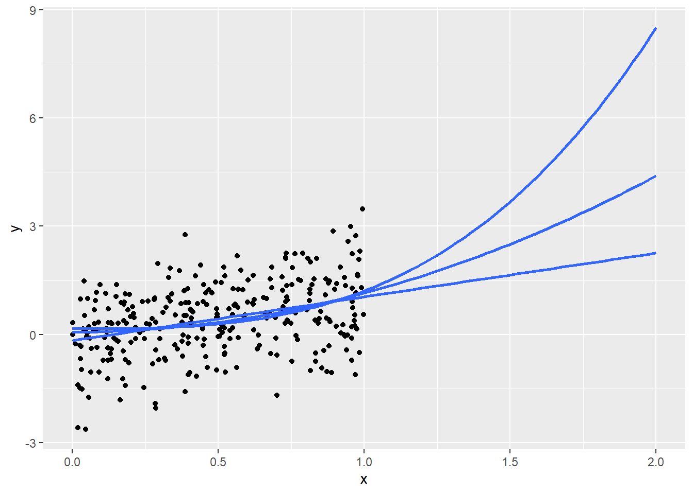

4 Egregious Aggregations (WIP)
Navigating the complexities of real-world data analysis
Once armed with an understanding of the data and tools available for analysis, a common start to analysis is exploring data with aggregation. At its heart, any sort of data analysis is the process of condensing raw data into something more manageable and useful while giving up as little of the information as possible. From linear regressions and hypothesis testing to random forests and beyond, much of data analysis could truly be called “applied sums an averages”.
Many elementary tools for this task are much better at the comprehension task than the preservation one. We learn rigorous assumptions to consider and validate when studying linear regression, but basic arithmetic aggregation presents itself as agnostic and welcome to any type of data. However, the underlying distributions of our variables and the relationships between them have a significant impact on the how informative and interpretable various summarizations are.
In this chapter, we will explore different ways that univariate and multivariate aggregations can be naive or uninformative.
4.1 Motivating Example: Similar in Summary
To begin, we will look at a whimsical toy example. This may feel trite or manufactured, but the subsequent sections will aim to convince you that these issues are not just esoteric. Consider the “datasaurus dozen” dataset (Matejka and Fitzmaurice 2017) which is available within the datasauRus R package ?r-datasaurus.
This dataset contains 12 sets of data stacked on top of one another and identified by the dataset column.1. Besides the identifier column, the data is fairly small and contains only two variables x and y.
df <- datasauRus::datasaurus_dozen
head(df) dataset x y
1 dino 55.3846 97.1795
2 dino 51.5385 96.0256
3 dino 46.1538 94.4872
4 dino 42.8205 91.4103
5 dino 40.7692 88.3333
6 dino 38.7179 84.8718A quick analysis of summary statistics reveals that each of the 12 datasets is very consistent in its summary statistics. The means and variances of x and y and even their correlations are nearly identifcal.
| dataset | mean(x) | mean(y) | var(x) | var(y) | cor(x, y) |
|---|---|---|---|---|---|
| away | 54.266 | 47.835 | 281.227 | 725.750 | -0.064 |
| bullseye | 54.269 | 47.831 | 281.207 | 725.533 | -0.069 |
| circle | 54.267 | 47.838 | 280.898 | 725.227 | -0.068 |
| dino | 54.263 | 47.832 | 281.070 | 725.516 | -0.064 |
| dots | 54.260 | 47.840 | 281.157 | 725.235 | -0.060 |
| h_lines | 54.261 | 47.830 | 281.095 | 725.757 | -0.062 |
| high_lines | 54.269 | 47.835 | 281.122 | 725.763 | -0.069 |
| slant_down | 54.268 | 47.836 | 281.124 | 725.554 | -0.069 |
| slant_up | 54.266 | 47.831 | 281.194 | 725.689 | -0.069 |
| star | 54.267 | 47.840 | 281.198 | 725.240 | -0.063 |
| v_lines | 54.270 | 47.837 | 281.232 | 725.639 | -0.069 |
| wide_lines | 54.267 | 47.832 | 281.233 | 725.651 | -0.067 |
| x_shape | 54.260 | 47.840 | 281.231 | 725.225 | -0.066 |
However, as shown in Figure 4.1, when we visualize this data, we find that the 12 datasets reveal remarkably different patterns.
Warning: package 'ggplot2' was built under R version 4.0.5This dataset is a more elaborate version of Anscombe’s Quartet, a well-known set of four datasets which exhibit similar properties. Examining a simiilar plot for Anscombe’s Quartet (with data from the anscombe dataset which ships in R’s datasets package), we can get better intuition for how the phenomenon is manufactured. Figure 4.2 shows as similar plot to Figure 4.1. Comparing datasets 1 and 3, for example, we can see a trade-off between a semi-strong trend with a consistent-seeming amount of noise and an nearly perfect linear trend with a single outlier.
Warning: package 'tidyr' was built under R version 4.0.5Warning: Values are not uniquely identified; output will contain list-cols.
* Use `values_fn = list` to suppress this warning.
* Use `values_fn = length` to identify where the duplicates arise
* Use `values_fn = {summary_fun}` to summarise duplicatesWarning: `cols` is now required when using unnest().
Please use `cols = c(x, y)``geom_smooth()` using formula 'y ~ x'Figure 4.2 also plots the simple linear regression line for each dataset. Similar to the summary statistics, these are also identical. We know this because the regression coefficient for a simple linear regression is given by cov(x,y)/sd(x)sd(y). You’ll notice I do not write “we can see that…” because, in fact, we can only see similarity not equality. The message of this section may seem to be “don’t summarize your data without plotting it”, but conducting “visual analytics” without looking at the numbers is also problematic. We’ll explore the latter topic more in Chapter -Section 5 (Vexing Visualiztions).
While there are clearly a contrived example (and, if you so chose to check out the “Datasaurus Dozen” paper, a very cleverly contrived example!), its also a cautionary tale. Summary statistics are not just insufficient when they focus on central tendency (e.g. mean) instead of spread. In this example, even an examination of variation and covariation led to an overly simplistic view of the underlying data.
4.2 Averages (WIP)
4.2.1 Implicit assumptions (TODO)
When statistics students study linear regression, they are introduced to a number of canonical assumptions including:
- The true functional form between the dependent and independent variables is linear / additive
- Errors are independent
- Errors have constant variance (that is, they are homoskedastic)
- Errors have a normal distribution
Of course, whether or not these assumptions hold, there’s nothing stopping anyone from mechanically fit at linear regression2. Instead, these assumptions are required to make the output of a linear regression meaningful and, more specifically, for conducting correct inference.
Similarly, there are no limitations on mechanically computing an average
4.2.2 Averaging skewed data
Arithmetic average versus colloquial meaning of average as “typical”
Skewed data
Multimodal data / mixture models
4.2.3 No “average” observation
In the previous section, the average represented a point in the relevant data range even if it was not perhaps the one most representative of a “typical” observation. We discussed how in some situations this quantity may be a reasonable answer to certain types of questions and an aid for certain types of decisions.
However, when we seek an average profile over multiple variables, the problems of averages are further compounded. We may end up with a set of “average” summary statistics that are not representative of any part of our population.
To see this, let’s assume we are working with data for a company with a subscription business model. We might be interested in profiling the age of each account (how long they have been a subscriber) and their activity (measured by amount spent on an e-commerce platform, files downloaded on a streaming service, etc.)
The following code simulates a set of observations: 80% of accounts are between 0 to 3 years in age and have an average activity level of 100 while 20% of accounts are older than 3 years in age and have an average activity level of 500. (Don’t over-think the specific probability distributions lived here. We are concerned with interrogating the properties of the average and not with simulating a realistic data generating process. Giving ourselves permission to be wrong or “lazy” about unimportant things gives us more energy to focus on what matters.)
set.seed(123)
# define simulation parameters ----
## n: total observations
## p: proportion of observations in group 1
n <- 5000
p <- 0.8
n1 <- n*p
n2 <- n*(1-p)
# generate fake dataset with two groups ----
df <-
data.frame(
age = c(runif(n1, 0, 3), runif(n2, 3, 10)),
act = c(rnorm(n1, 100, 10), rnorm(n2, 500, 10))
)Figure 4.3 shows a scatterplot of the relationship between account age (x-axis) and activity level (y-axis). Meanwhile, the marginal rug plots shows the univariate distribution of each variable. The sole red dot denotes the coordinates of the average age and average activity. Notably, this dot exists in a region of “zero density”; that is, it is not representative of any customer. Strategic decisions made with this sort of observation in mind as the “typical” might not be destined for success.
4.2.4 The product of averages
As the above example shows, averages of multivariate data can produce poor summaries – particularly when these variables are interrelated3.
A second implication of this observation is that deriving additional computations based on pre-averaged numbers is likely to obtain inaccurate results.
For example, consider that we wish to estimate the average dollar amount of returns per any e-commerce order. Orders may generally be a mixture of low-price orders (around $50 on average) and high-price orders (around $250 on average). Low-price orders may have a 10% probability of being returned while high price orders have a 20% probability. (Again, are these numbers, distributions, or relationships hyper-realistic? Not at all. However, once again we are telling ourselves a story just to reason about numerical properties, so we have to give ourselves permission to not focus on irrelevant details.)
set.seed(123)
# define simulation parameters ----
## n: observations per group
## pr[1|2]: mean price per group
n <- 100
pr1 <- 50
pr2 <- 250
pr_sd <- 5
re1 <- 0.1
re2 <- 0.2
# simulate spend amounts and return indicators ----
amt_spend <- c(rnorm(n, pr1, pr_sd), rnorm(n, pr2, pr_sd))
ind_return <- c(rbinom(n, 1, re1), rbinom(n, 1, re2))
# compute summary statistics ----
average_of_product <- mean(amt_spend * ind_return)
product_of_average <- mean(amt_spend) * mean(ind_return)The true average amount returned across all of our orders is 36.0438333 (from the average_of_product variable). However, if instead we already knew an average spend amount and an average return proportion, we might be inclined to compute the product_of_average method which returns a value of 26.9922866. (This is a difference of 9.05 relative to an average purchase amount of 150.)
At first, this may seem unintuitive until we write out the formulas and realize that these metrics are, in fact, two very different quantities:
\[ \frac{ \sum_{1}^{n} Spend }{\sum_{1}^{n} 1} \ * \frac{ \sum_{1}^{n} I(Return) }{\sum_{1}^{n} 1} \] over all \(n\) orders
versus
\[ \frac{\sum_{1}^{n} Spend * I(Return)}{\sum_{1}^{n} 1} \]
If this still feels counterintuitive, we can see how much of the difference is accounted for by the interrelation between our two variables. In the following code, we break the relationship between the variables by randomly reordering the ind_return variable so it is no longer has any true relationship to the corresponding amt_spend variable.
After redoing the calculations, we find that th two values are much closer. average_of_product is now 24.1041313 and product_of_average is now 26.9922866. These are notably still not the same number so that does not mean that these two equations are equivalent if variables are unrelated; however, this second result once again illustrates the extent to which interrelations can defy our naive intuitions.
4.2.5 Average over what? (TODO)
no such thing as an unweighted average (just sometimes weights are equal)
formal definition of expected value forces you to pick a probability distribution
eg avg mpg by time vs by mileage?
not strictly an error but our language allows an ill-defined problem
4.2.6 Dichotomization and distributions
n <- 1000
# simulate x and y: uniformly distributed x ----
x1 <- runif(n)
y1 <- 5 + 3*x1 + rnorm(n)
# simulate x and y: same relationship, more concentrated distribution of x ----
x2 <- c( runif(n*0.1, 0.00, 0.44),
runif(n*0.8, 0.45, 0.55),
runif(n*0.1, 0.55, 1.00)
)
y2 <- 5 + 3*x2 + rnorm(n)
# com
g1 <- ifelse(x1 < 0.5, 0, 1)
means1 <- c(mean(y1[g1 == 0]), mean(y1[g1 == 1]))
means1 [1] 5.813698 7.254438[1] 6.218347 6.762943means1[1] 5.813698 7.254438means2[1] 6.218347 6.762943cor(x1, y1)[1] 0.6424276cor(x2, y2)[1] 0.36876674.2.7 Small sample sizes
4.3 Proportions (WIP)
note that these are of course just a type of average (average of indicators) but helpful to examine challenges separately
4.3.1 Picking the right denominator
4.3.2 Sample size effects
4.4 Variation (TODO)
4.5 Correlation (WIP)
As shown in Figure 4.4,
4.5.1 Linear relationships only
4.5.2 Multiple forms
Traditional (Pearson) correlation depends on specific values whereas Spearman and Kendall focus on order statistics
# polynomials ----
x <- 1:10
y <- list(linear = x, quadratic = x**2, cubic = x**3, quartic = x**4)
vapply(y, FUN = function(z) cor(x, z, method = "pearson"), FUN.VALUE = numeric(1))
vapply(y, FUN = function(z) cor(x, z, method = "spearman"), FUN.VALUE = numeric(1))
vapply(y, FUN = function(z) cor(x, z, method = "kendall"), FUN.VALUE = numeric(1)) linear quadratic cubic quartic
1.0000000 0.9745586 0.9283912 0.8816779
linear quadratic cubic quartic
1 1 1 1
linear quadratic cubic quartic
1 1 1 1 Similar results with a different set of functions
# other functional forms ----
x <- 1:10
y <- list(sin(x), sqrt(x), exp(x), log(x))
vapply(y, FUN = function(z) cor(x, z, method = "pearson"), FUN.VALUE = numeric(1))
vapply(y, FUN = function(z) cor(x, z, method = "spearman"), FUN.VALUE = numeric(1))
vapply(y, FUN = function(z) cor(x, z, method = "kendall"), FUN.VALUE = numeric(1))[1] -0.1705046 0.9891838 0.7168704 0.9516624
[1] -0.1393939 1.0000000 1.0000000 1.0000000
[1] -0.1111111 1.0000000 1.0000000 1.00000004.5.3 Sensitivity to domain
The “strength of relationship” (completely deterministic) is the same in both cases
However, the summarization of the relationships changes
Here’s same case as before:
# polynomials ----
x <- 1:10
y <- list(linear = x, quadratic = x**2, cubic = x**3, quartic = x**4)
vapply(y, FUN = function(z) cor(x, z, method = "pearson"), FUN.VALUE = numeric(1))
vapply(y, FUN = function(z) cor(x, z, method = "spearman"), FUN.VALUE = numeric(1))
vapply(y, FUN = function(z) cor(x, z, method = "kendall"), FUN.VALUE = numeric(1)) linear quadratic cubic quartic
1.0000000 0.9745586 0.9283912 0.8816779
linear quadratic cubic quartic
1 1 1 1
linear quadratic cubic quartic
1 1 1 1 And here’s a different range:
# polynomials, diff range ----
x <- -10:10
y <- list(linear = x, quadratic = x**2, cubic = x**3, quartic = x**4)
vapply(y, FUN = function(z) cor(x, z, method = "pearson"), FUN.VALUE = numeric(1))
vapply(y, FUN = function(z) cor(x, z, method = "spearman"), FUN.VALUE = numeric(1))
vapply(y, FUN = function(z) cor(x, z, method = "kendall"), FUN.VALUE = numeric(1)) linear quadratic cubic quartic
1.0000000 0.0000000 0.9179069 0.0000000
linear quadratic cubic quartic
1 0 1 0
linear quadratic cubic quartic
1 0 1 0 4.5.4 Partial correlation
A lot of EDA starts with some sort of correlation matrix
This won’t always account for the fact that some variables can mask correlation between others
Consider two groups with trends in different directions
As Figure 4.5 shows
Because of the opposing trends, their correlation becomes zero
cor(var1, var2, method = "pearson")
cor(var1, var2, method = "spearman")
cor(var1, var2, method = "kendall")[1] 0
[1] 0
[1] 0However, by group the correlation is 1
A similar thing happens when the relationship has the same sign but different slopes
cor(var1, var3, method = "pearson")[1] 0.5703518while the correlation is still one within group
Even partial correlation doesn’t help in case of opposing signs
library(ppcor)Warning: package 'ppcor' was built under R version 4.0.5Loading required package: MASS
Attaching package: 'MASS'The following object is masked from 'package:patchwork':
areaThe following object is masked from 'package:dplyr':
selectpcor(data.frame(var1, var2, group))$estimate var1 var2 group
var1 1 0.0000000 0.0000000
var2 0 1.0000000 -0.8864053
group 0 -0.8864053 1.0000000It improves the strength of the estimated correlation in the case of var3 but still failes to estimate it correctly. Partial correlation would be assuming a form like var3 ~ var1 + group and not var3 ~ var1 * group
pcor(data.frame(var1, var3, group))$estimate var1 var3 group
var1 1.0000000 0.8320503 -0.7375338
var3 0.8320503 1.0000000 0.8864053
group -0.7375338 0.8864053 1.00000004.6 Trends
4.6.1 “If trends continue…”
Figure 4.6 shows that…
library(ggplot2)
n <- 300
x <- runif(n)
y <- x + rnorm(n)
ggplot(
data.frame(x, y),
aes(x, y)
) +
geom_point() +
geom_smooth(method = "lm", formula = y ~ I(x**1), se = FALSE, fullrange = TRUE) +
geom_smooth(method = "lm", formula = y ~ I(x**2), se = FALSE, fullrange = TRUE) +
geom_smooth(method = "lm", formula = y ~ I(x**3), se = FALSE, fullrange = TRUE) +
scale_x_continuous(limit = c(0,2))
4.6.2 Seasonality
seas_factor <- c(0.7, 0.8, 0.8,
0.9, 1.0, 1.1,
1.1, 1.1, 1.2,
1.2, 1.5, 1.8
)
base <- 1000
n_visits <- base * seas_factor
mean(df$n_visits[1:12])Warning in mean.default(df$n_visits[1:12]): argument is not numeric or logical:
returning NAmean(df$n_visits[8:12])Warning in mean.default(df$n_visits[8:12]): argument is not numeric or logical:
returning NAWarning in mean.default(df$n_visits[c(8:12, 1:12)]): argument is not numeric or
logical: returning NA[1] NA
[1] NA
[1] NA4.7 Comparisons (TODO)
4.7.1 Percents versus percentage points
4.7.2 Changes with small bases
(0.015 - 0.010) / 0.010
(0.805 - 0.800) / 0.800[1] 0.5
[1] 0.006250.015 / 0.010
0.805 / 0.800[1] 1.5
[1] 1.006254.8 Outliers (TODO)
4.9 Strategies (TODO)
4.10 Real World Disasters (TODO)
Straight vs weighted averages in COVID positivity rates (May 2020)
The changes could result in real-world differences for Hoosiers, because the state uses a county’s positivity rate as one of the numbers to determine which restrictions that county will face. Those restrictions determine how many people may gather, among other items.
Some Hoosiers may see loosened restrictions because of the changes. While Box said the county-level impact will be mixed, she predicted some smaller counties will see a decline in positivity rate after the changes.
“The change to the methodology is how we calculate the seven-day positivity rate for counties. In the past, similar to many states, we’ve added each day’s positivity rate for seven days and divided by seven to obtain the week’s positivity rate. Now we will add all of the positive tests for the week and divide by the total tests done that week to determine the week’s positivity rate. This will help to minimize the effect that a high variability in the number of tests done each day can have on the week’s overall positivity, especially for our smaller counties.”
three issues here
first straight versus weighted averages
avg_of_ratios <- (10/100 + 90/100) / 2
ratio_of_sums <- (10 + 90) / (100 + 100)
avg_of_ratios == ratio_of_sums
avg_of_ratios_uneq <- (10/100 + 180 / 200) / 2
ratio_of_sums_uneq <- (10 + 180) / (100 + 200)
avg_of_ratios_uneq == ratio_of_sums_uneq
weightavg_of_ratios_uneq <- (100/300)*(10/100) + (200/300)*(180/200)
ratio_of_sums_uneq == weightavg_of_ratios_uneq[1] TRUE
[1] FALSE
[1] TRUEthen back to the data for why it matters.
if data is from same distribution, this could increase variance but shouldn’t effect mean
Recall that the standard deviation of sample proportion is \(\sqrt(p*(1-p)/n)\)
link to discussions of sample size and different types of averages
set.seed(123)
# define simulation parameters ----
## n: total draws from binomial distribution
## p: proportion of successes
p <- 0.5
n <- 1000
# sample from binomials of different size ----
s010 <- rbinom(n, 10, p) / 10
s100 <- rbinom(n, 100, p) / 100
s500 <- rbinom(n, 500, p) / 500
# set results as dataframe for inspection ----
df <- data.frame(
s = rep(c(10, 100, 500), each = n),
x = c(s010, s100, s500)
)library(ggplot2)
ggplot(data = df) +
aes(x = x, col = as.character(s)) +
geom_density() +
geom_vline(xintercept = p, col = 'darkgrey', linetype = 2) +
labs(
title = "Sampling Distribution for p = 0.5",
col = "Sample Size"
) +
scale_x_continuous(breaks = seq(0, 1, 0.1), labels = seq(0, 1, 0.1)) +
theme(
plot.title = element_text(hjust = 0.5),
legend.position = "bottom"
)but low sample days based on real world are probably also a sign of a different distribution (only very urgent cases get tested?)
If you are following along in R, you might run
unique(df$dataset)to see all the values of this column. We won’t do that now as to not ruin the surprise↩︎In fact, the only mechanical constraint to computing linear regression output is that no column of the design matrix (no independent variable) is a precise linear combination of the other columns. Yet this constraint is not typically included among the standard statement of assumptions.↩︎
We intentionally avoid the word correlated here to emphasize the fact that correlation refers more strictly to linear relationships↩︎